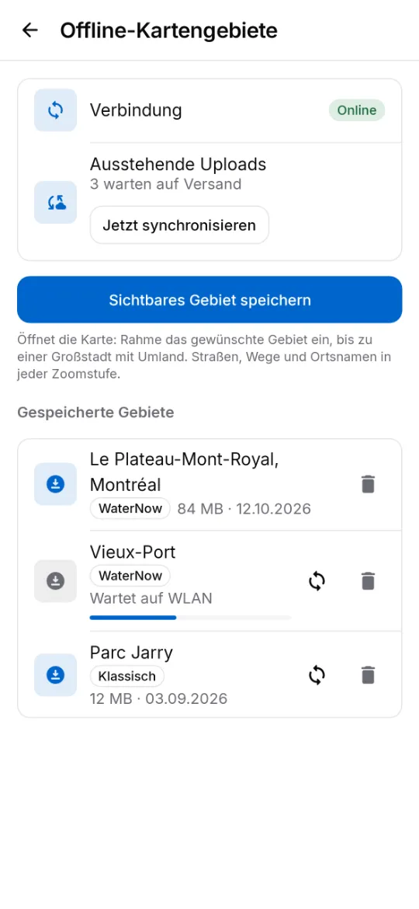

Montreal · Québec, Kanada
Finde kostenloses Wasser und Toiletten in Montreal
Alter Hafen, Mont Royal, Plateau, Lachine-Kanal: Wo du auch bist, WaterNow zeigt dir kostenlose Wasserstellen und Toiletten in deiner Nähe und führt dich hin.
Für Android herunterladen- Kostenlos
- Ohne Werbung
- Ohne Konto

Warum WaterNow
Kostenlos
Karte, Suche, Route und Offline-Karten sind kostenlos, für immer.
Ohne Werbung
Keine Werbung, nirgends in der App.
Ohne Konto
Im Gastmodus kannst du die Karte durchsuchen, Routen abrufen und deine Nachfüllungen eintragen.
Offline nutzbar
Speichere deine Stadt: Karte und Orte funktionieren ohne Verbindung.
Navigation Schritt für Schritt
Zu Fuß, mit dem Rad oder im Auto, mit einer Stimme, die jede Abbiegung ansagt.
Barrierefrei und hundefreundlich
Filter zeigen nur barrierefreie Orte oder solche mit Wasser für deinen Hund.
7 Sprachen
Deutsch, Englisch, Französisch, Spanisch, Portugiesisch, Japanisch und Rumänisch.
Datenschutz zuerst
Keine Tracker. Dein Standort dient dazu, Wasser in deiner Nähe zu finden, und du kannst deine Daten jederzeit exportieren oder löschen.
Ein Blick in die App


So funktioniert's
Lade die App herunter
Kostenlos, für Android, direkt von dieser Seite.
Öffne sie, mit oder ohne Konto
Fahre als Gast fort oder erstelle ein Konto: Du entscheidest.
Lass dich führen
Wähle eine Wasserstelle oder eine Toilette in deiner Nähe und folge der Navigation.
Häufige Fragen
Ist WaterNow kostenlos?
Ja. Karte, Suche, Route und Offline-Karten sind kostenlos und ohne Werbung. Es gibt freiwillige Extras, aber alles Nützliche bleibt kostenlos.
Brauche ich ein Konto?
Nein. Als Gast kannst du die Karte durchsuchen, Routen abrufen und deine Nachfüllungen eintragen. Mit einem Konto kannst du außerdem Orte, Bewertungen und Fotos hinzufügen.
Funktioniert die App offline?
Ja. Speichere das Gebiet, das du brauchst, bis zu einer Großstadt mit Umland: Karte und Orte funktionieren dann ohne Verbindung.
Auf welchen Handys läuft sie?
Auf Android. Der Button lädt die App direkt von dieser Seite herunter, und Android fragt dich, ob du die Installation erlaubst.
Durst in Montreal?
Hol dir WaterNow und sieh kostenloses Wasser und Toiletten in deiner Nähe.
Für Android herunterladen